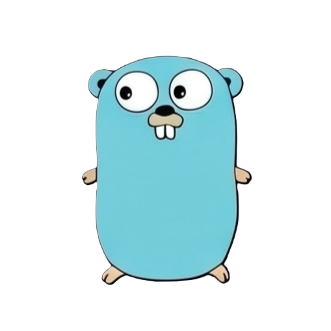

Go (often called Golang) is Google's answer to slow C++ compiles and tangled large-scale codebases. It has just 25 keywords, compiles to a single binary, and makes running thousands of lightweight concurrent tasks as easy as adding one word: go. Here's where it came from, what makes it different, and why it quietly runs the cloud.

Go is a statically typed, compiled language built for simplicity and speed — both the speed of compiling code and the speed of running many things at once.
No classes, no inheritance, no exceptions, and until recently no generics — Go deliberately keeps its surface area tiny so any teammate can read any file.
Lightweight concurrent functions (goroutines) communicate safely through channels, replacing error-prone manual thread management.
Go was built specifically to fix painfully slow C++ build times at Google — large projects still compile in seconds.
go build produces one self-contained executable — no runtime, no dependency hunting on the target machine.
Why goroutines scale further than traditional OS threads:
Go's creators weren't trying to invent something flashy — they were tired of watching their own code take forever to compile.
Robert Griesemer, Rob Pike, and Ken Thompson — the co-creator of Unix — start sketching language goals at Google on September 21, 2007, frustrated by 8GB of compiled headers for just 4.2MB of source code.
Ken Thompson finishes a first compiler that transliterates Go into C for fast prototyping. Rob Pike writes the first real Go program in February 2008 — back when Go didn't even have strings yet.
Go is publicly announced and open-sourced on November 10, 2009, with the gopher mascot (designed by Renée French) introduced the same year.
Version 1.0 ships with a guarantee: code written for Go 1 keeps compiling, unchanged, for every future Go 1.x release — a major reason enterprises trust it long-term.
Docker is built in Go from the start; Kubernetes — Google's own container orchestrator — launches written in Go too, cementing Go as the language of cloud infrastructure.
Go wins TIOBE's Programming Language of the Year for the second time, having already won it in its debut year, 2009.
After years of community debate, Go 1.18 ships generics on March 15, 2022 — letting one function work across multiple types without sacrificing Go's simplicity.
Go increasingly powers the plumbing around AI — model-serving gateways, Kubernetes GPU operators, and tools like Ollama — even as Python remains the language of the models themselves.
Go rarely shows up in the front end — its strengths point squarely at backend services, infrastructure, and anything that needs to run fast and deploy as one file.
The tools that run modern cloud infrastructure are themselves written in Go — static binaries deploy easily across any environment.
Companies like Uber, Cloudflare, and Twitch run thousands of Go microservices to handle massive concurrent request volumes.
Terraform, Hugo, and countless internal tools ship as one executable — no installer, no runtime to set up first.
Goroutines handle thousands of simultaneous database connections far more cheaply than thread-per-connection models in older languages.
Go runs the gateways, operators, and plumbing that deliver AI models at scale — even though Python trains the models themselves.
Go's small keyword set and clear error handling make it a popular language for developers moving from scripting into backend engineering.
Even developers who've never written a line of Go interact with software built in it every single day.
Go climbed the TIOBE index from nowhere to a top-10 language within a few years of release — and major cloud companies followed.
13.5% of developers worldwide report using Go, rising to 14.4% among professional developers, per recent Stack Overflow survey data. Go was named TIOBE's Programming Language of the Year in both 2009 (its debut) and 2016, and remains the dominant language for Cloud Native Computing Foundation projects.
Go's toolchain is famously simple — most projects need nothing beyond these four commands.
Define a package, write functions, and use go fmt to auto-format — there's only one accepted style.
go run main.go compiles and executes in one step — ideal for fast iteration during development.
go test ./... runs the standard library's testing framework — no third-party test runner needed.
go build compiles everything into a single, dependency-free executable ready to deploy anywhere.
Primary sources used for the facts above, plus places to actually learn the language hands-on.
The Go team's own interactive, in-browser tutorial — the best starting point.
University and industry-partnered courses from fundamentals to backend systems.
Project-based courses including microservices, gRPC, and Kubernetes-focused bootcamps.